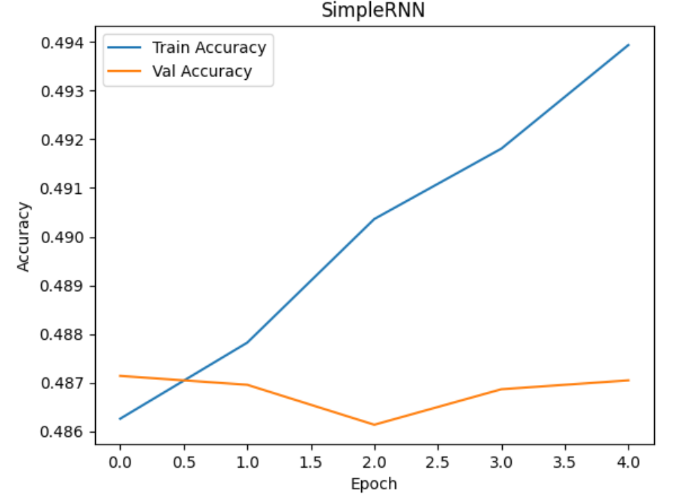
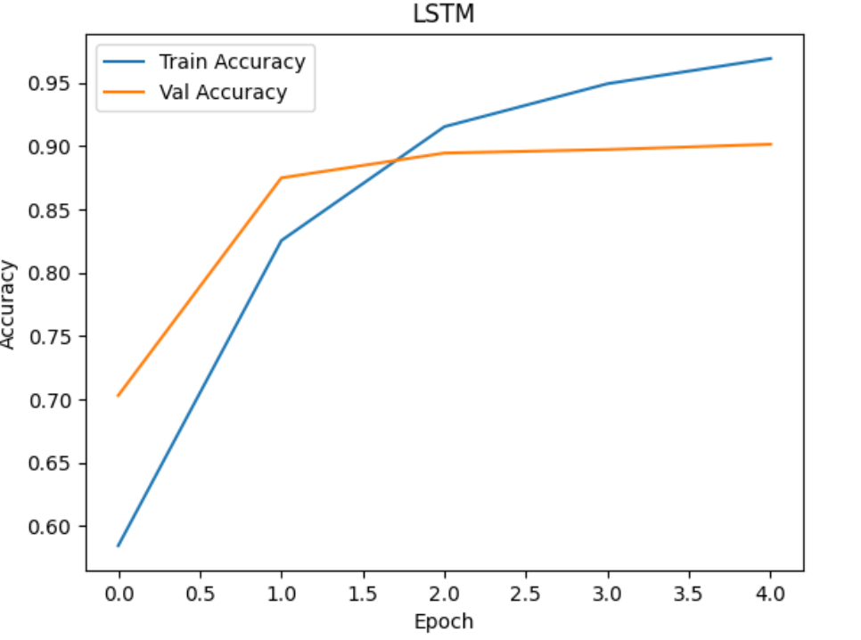
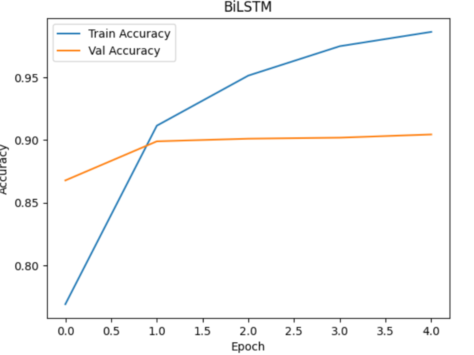
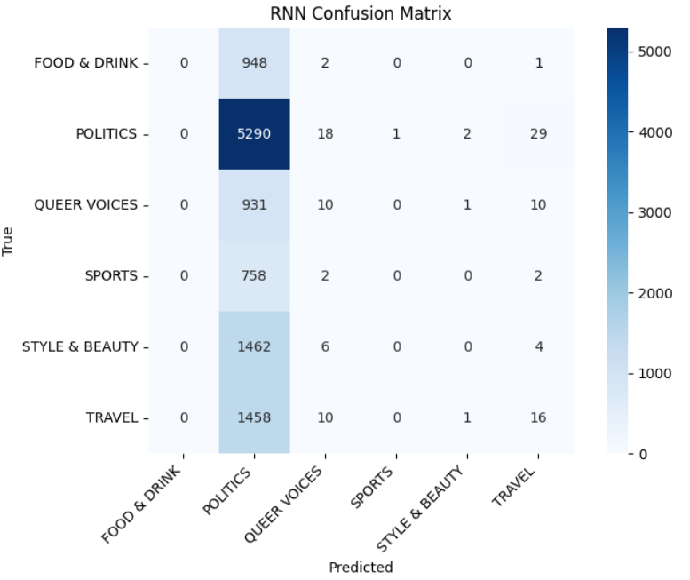
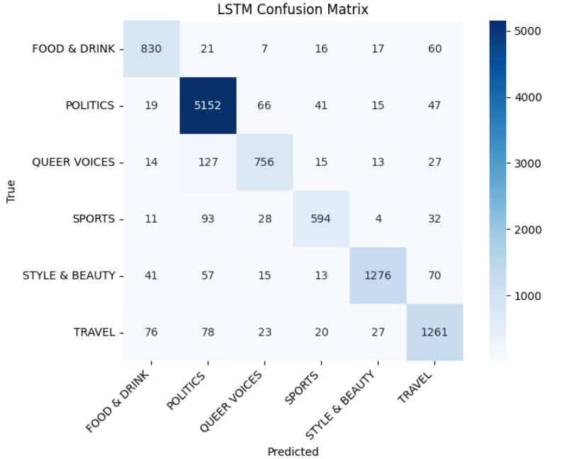
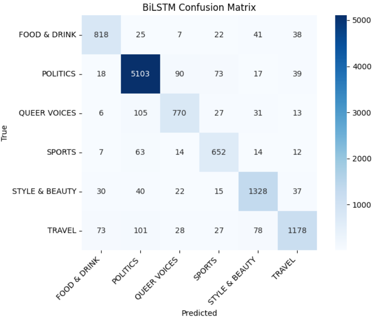

Text branch
Results, comparisons, and visualizations
Performance summary for SimpleRNN, LSTM, BiLSTM, and DistilBERT on the 6-class subset of the News Category dataset.
Optimization
Training setup
Shared preprocessing with model-specific batch sizes and sequence lengths.
Epochs
5 / 3
RNNs / DistilBERT (70/15/15 split)
Batch sizes
32 / 16
RNNs / DistilBERT
Seq length
60 / 128
RNNs / DistilBERT
Optimizers
Adam / AdamW
RNNs / DistilBERT
- Loss: Cross-entropy; metrics tracked as Accuracy and Macro-F1.
- Dropout on RNN heads; optional mixed precision.
- Loader note: DistilBERT notebook reuses one loader for train and validation (no separate val loader).
Ablation
Loss function comparison
Cross-entropy vs focal loss across models.
| Model | Loss | Accuracy | Macro-F1 |
|---|---|---|---|
| SimpleRNN | CrossEntropy | 0.4843 | 0.3213 |
| SimpleRNN | Focal | 0.4850 | 0.3210 |
| LSTM | CrossEntropy | 0.8917 | 0.8928 |
| LSTM | Focal | 0.8911 | 0.8913 |
| BiLSTM | CrossEntropy | 0.9022 | 0.9021 |
| BiLSTM | Focal | 0.8935 | 0.8922 |
| DistilBERT | CrossEntropy | 0.8606 | 0.8522 |
| DistilBERT | Focal | 0.8758 | 0.8721 |
Focal loss did not outperform cross-entropy in these runs; LSTM with cross-entropy remains best overall.
Protocol
Evaluation
Validation mirrors the class imbalance; metrics reported on a held-out 15% test split.
Validation
15%
Stratified hold-out
Test
15%
Held-out split
Metrics
Acc & Macro-F1
Reported on val/test
Reporting
Single seed
DistilBERT shares train/val loader
- Validation strategy: stratified hold-out (15% validation, 15% test).
- Metrics: Accuracy and Macro-F1; same metrics shown for the test set.
- Reporting: single-seed runs per model; DistilBERT uses the shared train/val loader in the notebook.
- Checkpointing: monitor validation loss; best checkpoint retained when early stopping is enabled.
Metrics
Main comparison
Report key metrics for each model.
| Model | Accuracy | Macro-F1 | Params (M) | Inference (ms/sample) |
|---|---|---|---|---|
| LSTM | 0.9003 | 0.8996 | 4.42 | 0.0174 |
| BiLSTM | 0.8985 | 0.8979 | 4.55 | 0.0286 |
| DistilBERT | 0.8778 | 0.8732 | 66.0 | 4.1707 |
| SimpleRNN | 0.4849 | 0.3229 | 4.32 | 0.0118 |
Metrics from the held-out test split on the 6-class subset; parameters and per-sample latency pulled from notebook logs (DistilBERT params ~66M).
Visuals
Plots & qualitative results
Learning curves and confusion matrices for the trained models (one figure per row).

SimpleRNN loss: baseline convergence across 5 epochs.

LSTM loss: fastest, smoothest convergence.

BiLSTM loss: similar trajectory; slight overfit late epochs.

SimpleRNN confusion matrix: strong bias toward head classes.

LSTM confusion matrix: improved balance across categories.

BiLSTM confusion matrix: similar to LSTM with slight gains in minority classes.
Insights
Discussion
Interpret results and trade-offs.
- LSTM slightly outperforms BiLSTM; both beat DistilBERT on this dataset.
- DistilBERT lags likely due to limited fine-tuning steps and small sequence length cap (128).
- SimpleRNN struggles with long-range context, confirming baseline limitations.
- Imbalance and similar categories drive confusion among lifestyle/health labels.
- Recommendation: deploy LSTM/BiLSTM; revisit DistilBERT with longer training and class weighting.